Корона и знамя — сгенерированные ассеты
Сгенерировано вместо nano banana 2 по файлу промтов · 17.11.2026
· всего 30.8 МБ в 48 файлах
Стиль-якорь: painterly medieval fantasy, приглушённая земляная палитра
(железо-коричневый, охра, мох, шифер), тёплый пергамент, чистый силуэт, без надписей.
Войска — карточки-портреты
512×512, прозрачный фон, постановка на общую «землю».
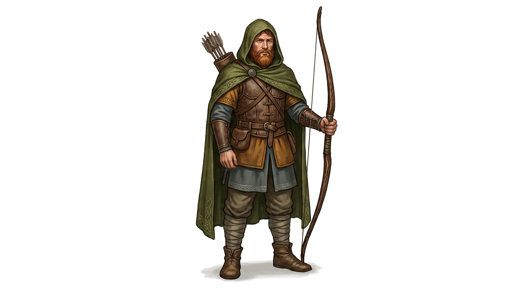
archer_card512×512 · 199 KB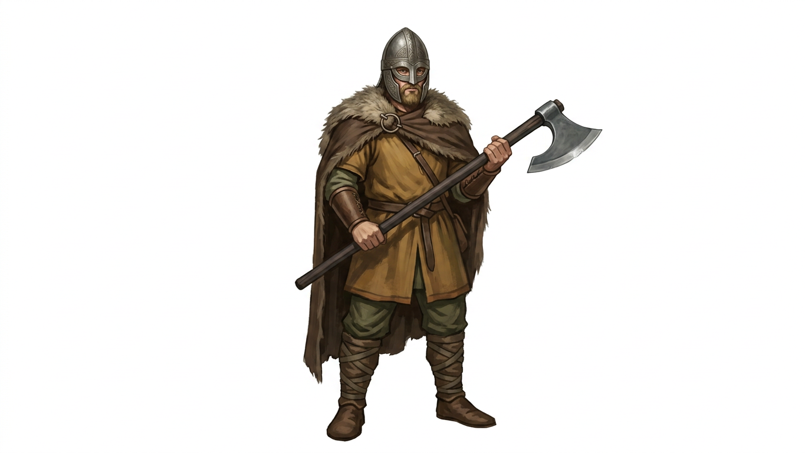
axeman_card512×512 · 165 KB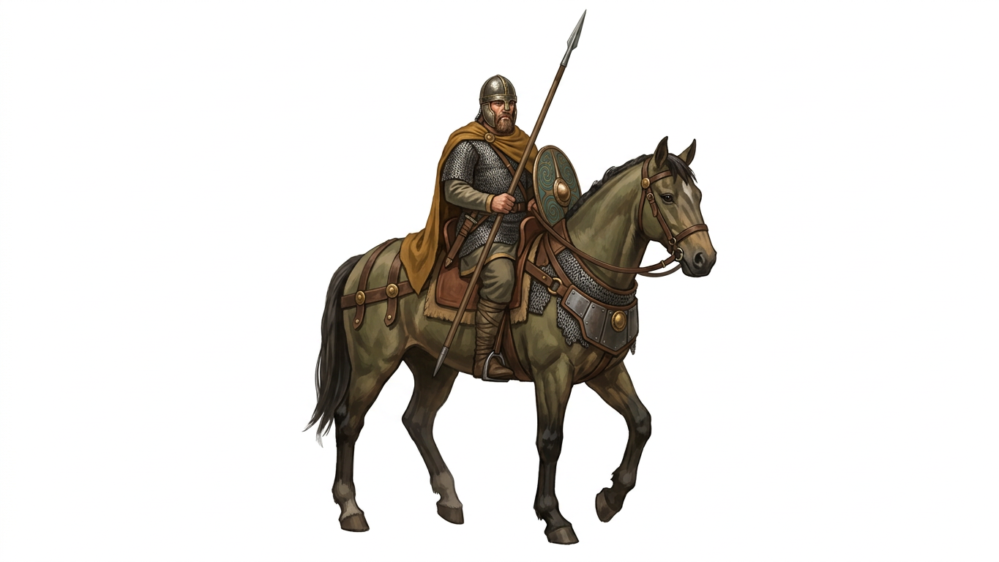
cavalry_card512×512 · 269 KB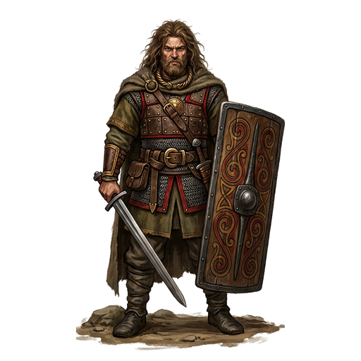
gaul_card512×512 · 246 KB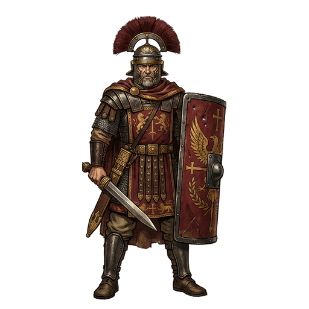
roman_card512×512 · 201 KB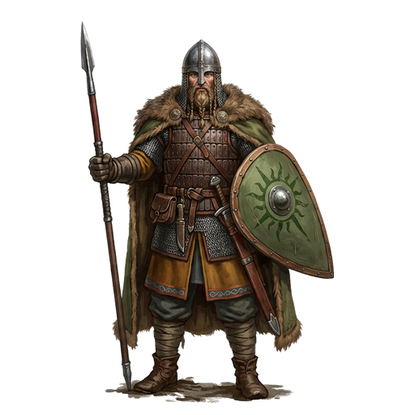
slavic_card512×512 · 222 KB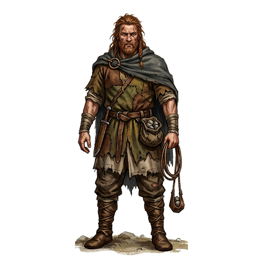
slinger_card512×512 · 189 KB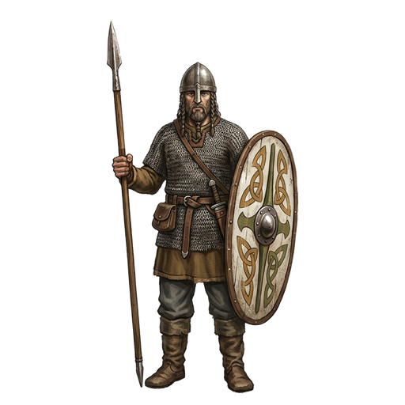
spearman_card512×512 · 171 KB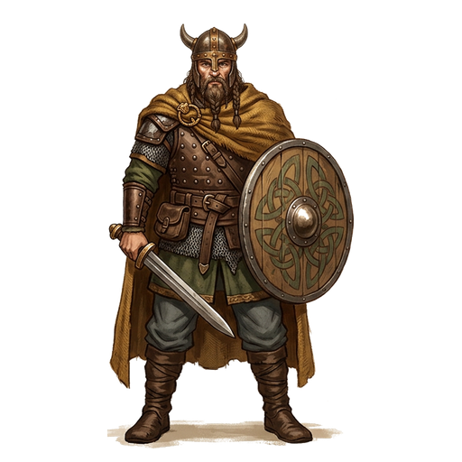
sword_card512×512 · 229 KB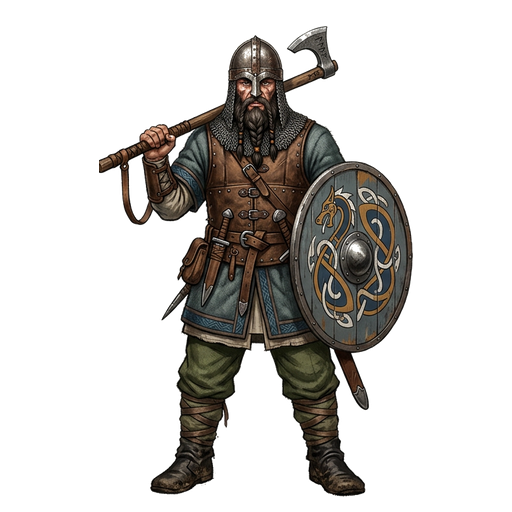
viking_card512×512 · 220 KBИнтерфейс боя
Пергамент, тёмное дерево, золото. Панель, кнопки, плашка раунда, полоса численности.
battle_panel1408×768 · 2766 KB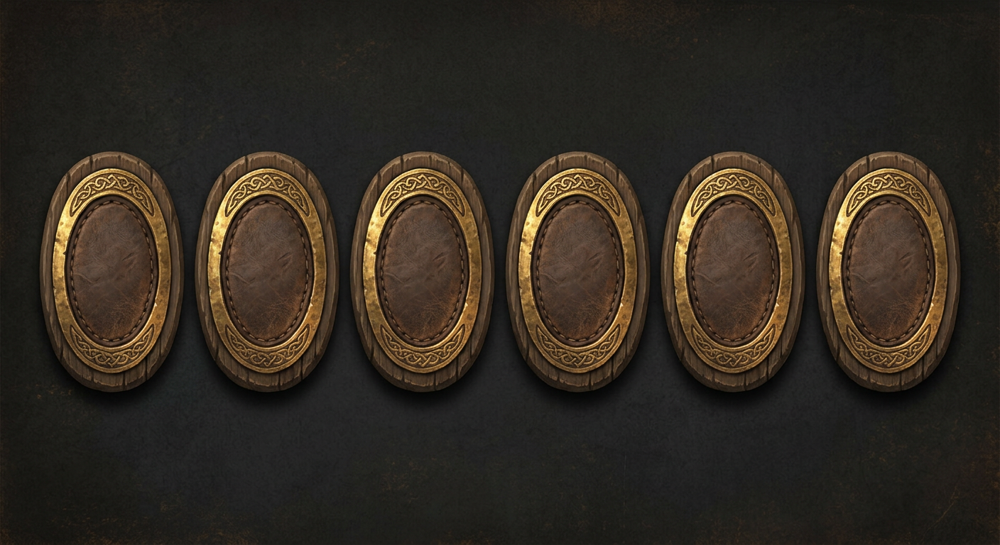
battle_buttons1408×768 · 1897 KB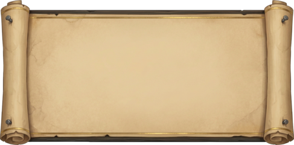
round_banner1315×704 · 1601 KB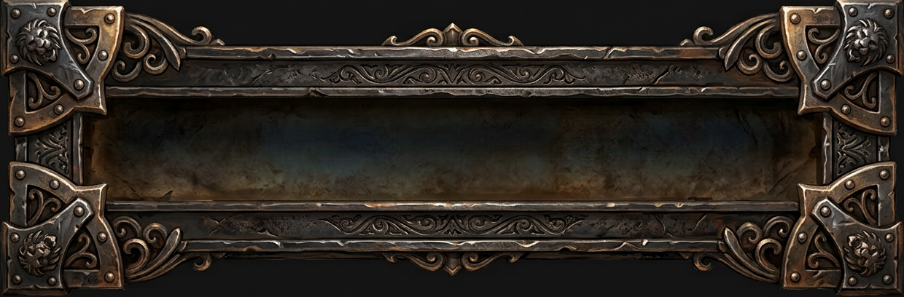
hp_bar1240×408 · 807 KB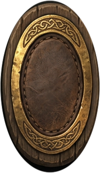
button206×358 · 152 KB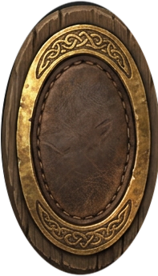
button2197×345 · 144 KB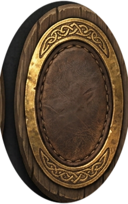
button3217×345 · 153 KB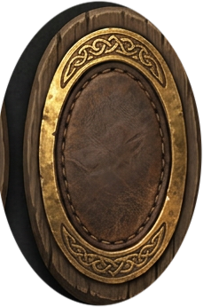
button4229×346 · 159 KB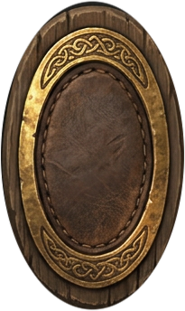
button5205×344 · 147 KB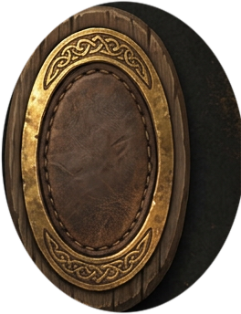
button6264×344 · 178 KB
Иконки приказов, построений и состояний
Сверху — исходные листы от генератора, ниже — нарезанные PNG 128×128 с прозрачным фоном, готовые для движка.
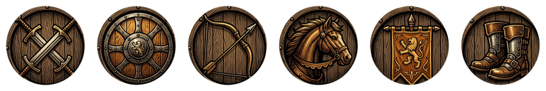
command_icons_row.png768×128 · 169 KB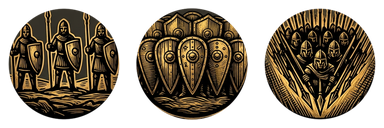
formation_icons_row.png384×128 · 88 KB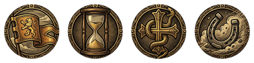
status_icons_row.png512×128 · 119 KB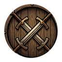
attack128×128 · 29 KB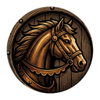
charge128×128 · 29 KB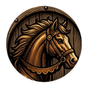
charge2128×128 · 29 KB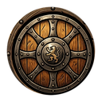
defend128×128 · 30 KB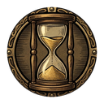
fatigue128×128 · 28 KB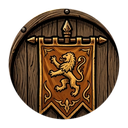
hold128×128 · 28 KB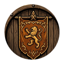
hold2128×128 · 28 KB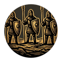
line128×128 · 27 KB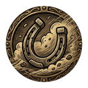
march128×128 · 31 KB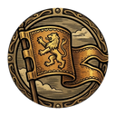
morale128×128 · 31 KB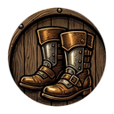
retreat128×128 · 28 KBshieldwall128×128 · 29 KBsickness128×128 · 31 KB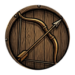
volley128×128 · 27 KB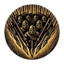
wedge128×128 · 32 KBФоны поля боя
Живописные фоны без войск; на них движок кладёт отряды.
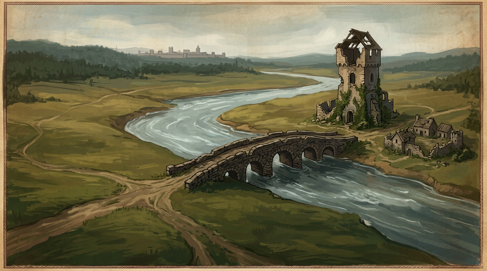
battle_bg_bridge1376×768 · 2450 KB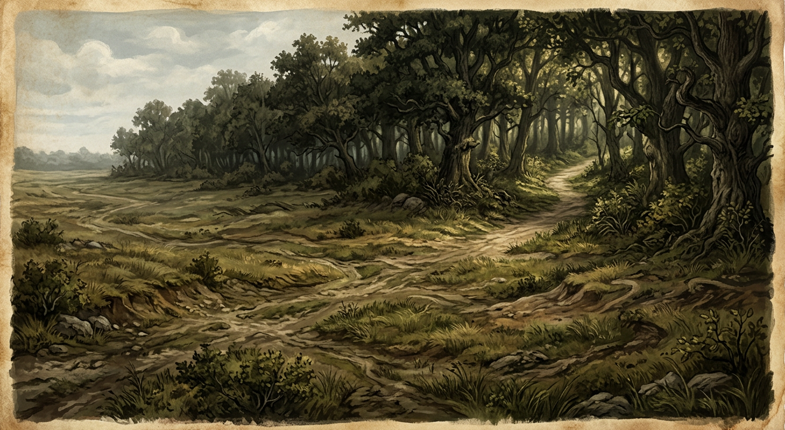
battle_bg_forest1348×740 · 1861 KB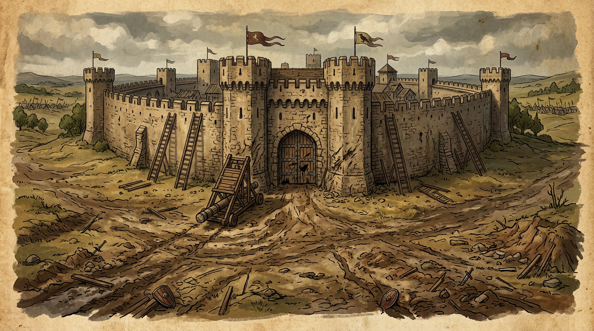
battle_bg_fortress1376×768 · 2821 KB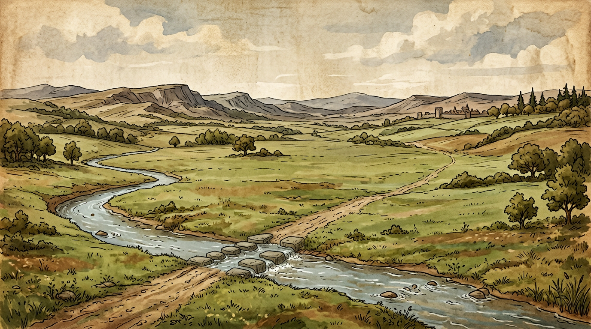
battle_bg_river1376×768 · 2768 KB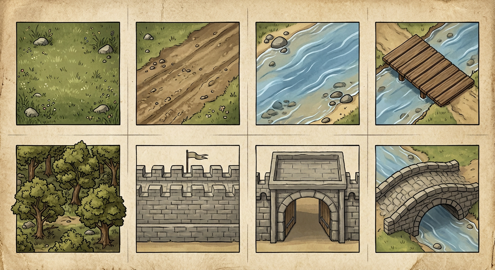
battle_tiles1408×768 · 2725 KBТайлы поля боя
8 тайлов 128×128: трава, дорога, река, брод, лес, стена, ворота, мост.
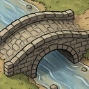
bridge128×128 · 38 KB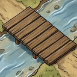
ford128×128 · 38 KB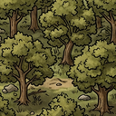
forest128×128 · 40 KB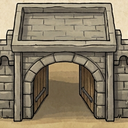
gate128×128 · 31 KB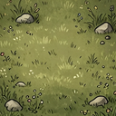
grass128×128 · 34 KB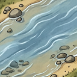
river128×128 · 34 KB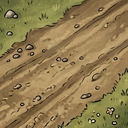
road128×128 · 35 KB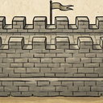
wall128×128 · 31 KBСпрайты ходьбы
GIF — предпросмотр цикла; в игре используются листы *_walk_row.png с паспортом .json.
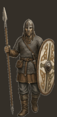
01_spearman98×200 · 103 KB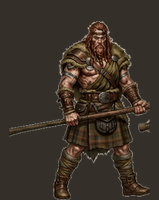
02_axeman159×200 · 125 KB03_sword_and_shield114×200 · 127 KB04_slinger92×200 · 106 KB05_cavalry178×200 · 230 KBИллюстрации для новостей и Кодекса
Смотр войск, стена после штурма, обложка Кодекса.
codex_cover896×1200 · 2823 KBmuster_scene1408×768 · 2940 KBsiege_aftermath1408×768 · 2896 KB